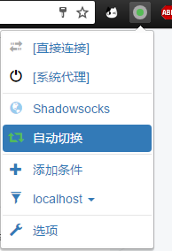

此文章是以 Shadowsocks 代理为例，若想使用 Shadowsocks 请先安装对应系统的客户端并启动。详情请参考：
Chrome 浏览器
无论是用户体验、强大的功能还是丰富的扩展程序都完爆国内的各种浏览器好不好(╯‵□′)╯︵┻━┻。强烈推荐啊！目前已经可以在不翻墙的情况下去 下载 Chrome（桌面版）了，账号数据同步方面也不需要翻墙了。【鼓掌撒花★,°:.☆(￣▽￣)/$:.°★ 。】
SwitchyOmega
Google Chrome 浏览器上的一个代理扩展程序，可以轻松快捷地管理和切换多个代理设置。比如我们接下来要介绍的 自动切换模式。
下载安装
点击 Github-SwitchyOmega，下载页面有详细的安装教程，仔细看一下就好。
配置 Shadowsocks 情景模式
- 打开 Chrome， 点击右上角的 图标，再点击
选项。
 - 点击左侧的
新建情景模式，输入情景模式名称Shadowsocks【自己任意设置名称】，类型选择第一个代理服务器。创建完成后做如下配置：
你也可以自己设置不代理的地址列表。如上图。 - 保存后你就可以通过这个情景模式科学上网了~
配置自动切换模式
配置好 Shadowsocks 情景模式后虽然可以使用 Chrome 浏览器科学上网了，但是这样的话无论你访问什么网站都会走代理，有时候访问国内的一些网站反而会很慢，这时候自动切换模式就解决了这个问题。下面介绍一下如何配置自动切换模式。
- 点击左侧的
自动切换，或者自己新建情景模式，类型选择第二个自动切换模式。然后做如下配置：
切换规则是在访问条件设置的域名时候使用后面设置的情景模式。比如图中我设置*.google.com和*.github.com使用Shadowsocks情景模式【刚刚创建的那个情景模式】。我们可以点击添加条件来添加自己的规则。- 将图中
规则列表规则前面的框打√，再将后面的情景模式设置为Shadowsocks，意思是规则列表中的内容，我们使用Shadowsocks情景模式。然后规则列表设置中：- 规则列表格式： AutoProxy；
- 规则列表网址： https://raw.githubusercontent.com/gfwlist/gfwlist/master/gfwlist.txt
- 这样设置完成
规则列表规则后就不需要在切换规则中一个一个添加条件了。 切换规则最后一行的默认情景模式代表不在规则列表中网址我们使用直接连接情景模式，也就是说不走代理。
参考资料
文章标题：Chrome 配置 SwitchyOmega
文章作者：cylong
文章链接：http://www.cylong.com/blog/2017/04/09/chrome-SwitchyOmega/
有问题或者建议欢迎在下方评论。欢迎转载、引用，但希望标明出处，感激不尽(●’◡’●)